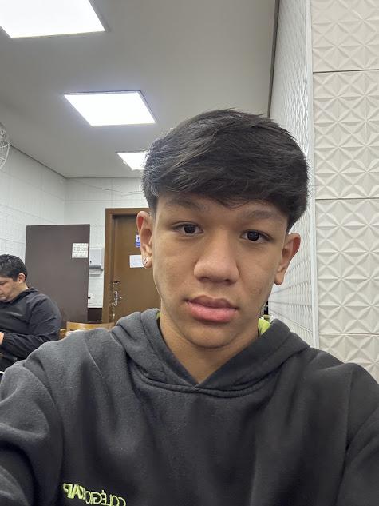

Davi Jun Inteligência Artificial & Paixão por Inovação e Conhecimento.
Estudante do Colégio FECAP no curso técnico de Inteligência Artificial. Movido pela curiosidade científica, pela resolução de problemas complexos e pela união entre a precisão da tradição e as fronteiras do futuro.

Curiosidade que move, herança que guia.
Uma ponte entre os princípios da cultura japonesa e o dinamismo da era digital.
Quem sou eu 15 anos · São Paulo
Meu nome é Davi Jun. Tenho 15 anos, tenho origem japonesa e vivo em São Paulo, onde dedico minha rotina aos estudos no Colégio FECAP, integrando o Ensino Médio ao curso técnico em Inteligência Artificial.
Desde cedo, me encantei por tecnologia e pelo modo como a computação pode resolver desafios reais. Na cultura japonesa herdada da minha família, aprendi o valor do Kaizen (改善) — a filosofia da melhoria contínua —, a atenção cuidadosa aos detalhes e a disciplina com os estudos.
Para mim, a Inteligência Artificial não é apenas uma matéria ou ferramenta de programação; é a linguagem do futuro na qual escolhi me aprofundar para construir uma carreira sólida, ética e transformadora.
"Acredito que a combinação entre o rigor do pensamento lógico e a sensibilidade humana é a verdadeira chave para a inovação."
— Davi JunRaízes & Tradição
Apreço profundo pela estética minimalista, pelo respeito ao aprendizado e pela cultura nipônica que faz parte da minha essência diária.
Foco no Futuro
Vontade constante de absorver novas tecnologias, entender arquiteturas de Machine Learning e praticar desenvolvimento de software.
Culinária & Convivência
Apaixonado pela culinária japonesa e por boas massas italianas — momentos de descontração e partilha com pessoas queridas.
Colégio FECAP: A base do meu aprendizado em IA.
Uma das instituições de ensino mais tradicionais e respeitadas do país, preparando para as demandas de um mundo orientado a dados.
Técnico em Inteligência Artificial — Colégio FECAP
No Colégio FECAP, o curso técnico proporciona imersão prática em programação, estruturas matemáticas, modelos de aprendizado de máquina e visão computacional. É o espaço onde desenvolvo competências técnicas essenciais e aprendo a pensar criticamente sobre o impacto social da tecnologia.
Machine Learning
Algoritmos de classificação, regressão e agrupamento para identificar padrões complexos em grandes volumes de dados.
Python & Lógica
Desenvolvimento de scripts, automação e implementação de estruturas de dados eficientes com bibliotecas modernas.
Análise de Dados
Exploração estatística, tratamento de datasets, métricas de acurácia e visualização gráfica de informações.
IA Responsável
Compreensão das implicações éticas de vieses em algoritmos e criação de soluções transparentes que respeitam o usuário.
Olimpíadas: Raciocínio lógico e clareza de pensamento.
A dedicação aos estudos validada em competições acadêmicas de abrangência nacional.
OBMEP
Olimpíada Brasileira de Matemática das Escolas Públicas
Conquista da classificação para a Segunda Fase da maior olimpíada científica do Brasil. Demonstra domínio de raciocínio dedutivo, geometria, aritmética avançada e paixão pela solução de enigmas matemáticos complexos.
Olimpíada de Português (OP)
Interpretação, Gramática & Análise Textual
Avanço para a Segunda Fase da competição, evidenciando habilidade de interpretação crítica, clareza argumentativa e domínio da norma culta. Uma competência indispensável para a formulação de problemas em IA e comunicação assertiva.
A união entre Exatas e Linguagens
Construir inteligência artificial de alto nível requer rigor matemático para os modelos e sensibilidade linguística para compreender dados humanos e comandos complexos.
Para além das linhas de código.
A convergência entre a revolução digital, a contemplação cultural e a arte da gastronomia.
Inteligência Artificial & Programação
Fascínio por acompanhar novos modelos fundacionais, experimentação com prompts e códigos, e curiosidade constante em descobrir como redes neurais artificiais conseguem aprender e criar.
Cultura & Estética Japonesa
Orgulho das raízes familiares e conexão genuína com os valores orientais: harmonia, disciplina, respeito às tradições e uma admiração pelo design limpo e funcional que atravessa séculos.
Gastronomia Japonesa (和食)
Grande apreço pelos pratos tradicionais japoneses — desde a arte e precisão de um sushi bem elaborado até o conforto reconfortante de um ramen fumegante em dias de estudo intenso.
Apreço por Massas
Junto da culinária japonesa, as massas ocupam o topo dos meus pratos favoritos. A textura de uma massa fresca e os molhos bem apurados são momentos de celebração gastronômica no meu dia a dia.
O que busco construir no amanhã.
Passos deliberados para transformar potencial juvenil em impacto tecnológico duradouro.
Excelência no Colégio FECAP
Aprofundar os estudos técnicos no curso de Inteligência Artificial, desenvolver projetos práticos de programação e continuar participando de olimpíadas científicas com foco em superar metas anteriores.
Graduação em Ciência da Computação & IA
Ingressar em uma universidade de excelência para cursar Ciência da Computação, Engenharia de Software ou IA, participando de grupos de pesquisa e maratonas de programação.
Desenvolver Sistemas Inteligentes que Ajudem Pessoas
Trabalhar na linha de frente do desenvolvimento de inteligência artificial, criando soluções tecnológicas que impulsionem a educação, a medicina ou a sustentabilidade de forma ética e inovadora.
Vamos construir o futuro juntos?
Seja para trocar ideias sobre Inteligência Artificial, projetos acadêmicos ou oportunidades de aprendizado, será um prazer conversar.